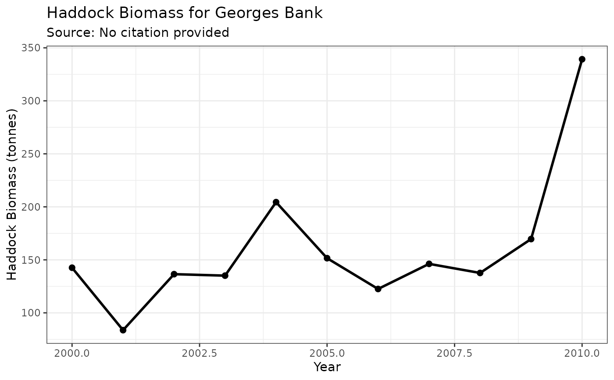
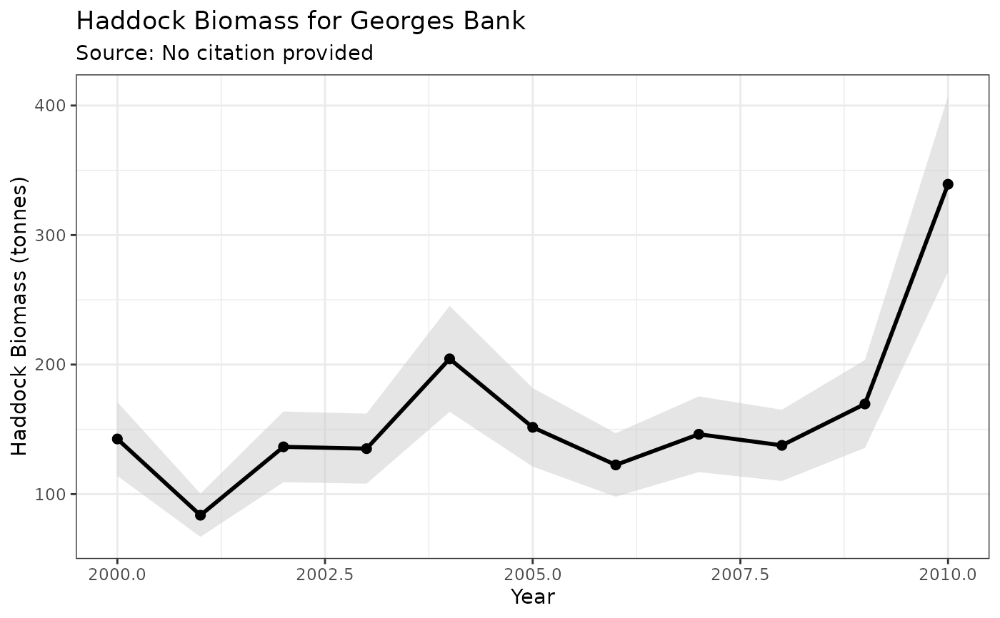
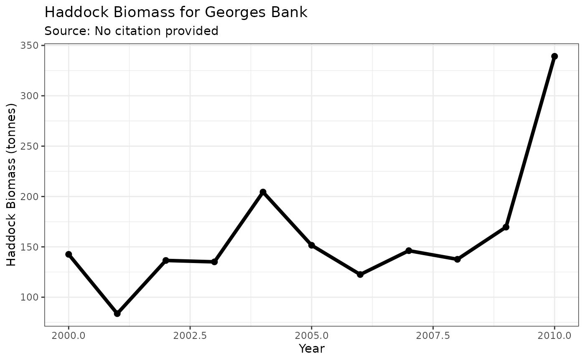
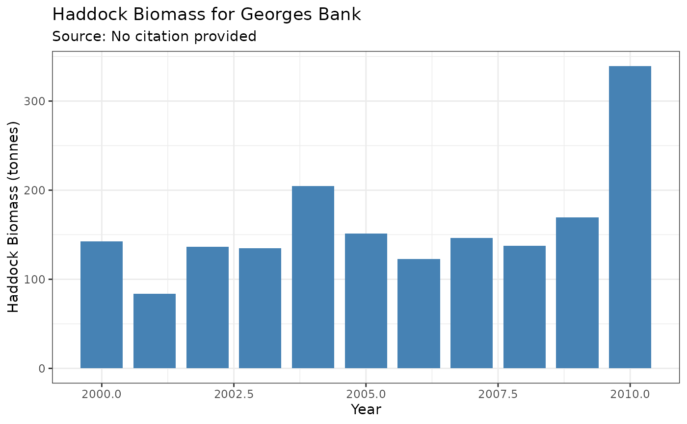

Creates a time series plot for an ea_data object. Several plotting styles
are available, allowing for flexible visualization of time series data,
uncertainty, and anomalies.
Usage
# S4 method for class 'ea_data,missing'
plot(
x,
style = c("default", "ribbon", "plain", "biomass", "anomaly", "histogram", "indicator",
"indicator_ref", "diversity", "temperature_regime", "nao_enhanced"),
reference_period = c(1991, 2020),
sd_threshold = 1,
highlight_recent = TRUE,
show_trend = TRUE,
regime_threshold = 0.5,
mean_line_color = "red",
trend_line_color = "blue",
warm_color = "red",
cold_color = "blue",
...
)Arguments
- x
An
ea_dataobject.- style
Character; One of:
"default","ribbon","plain","biomass","anomaly","histogram","indicator","indicator_ref","diversity","temperature_regime","nao_enhanced".- reference_period
Numeric vector of length 2. Years defining reference period for standardized anomalies. Default is c(1991, 2020) for climate consistency. Used with
"indicator_ref"and"temperature_regime"styles.- sd_threshold
Numeric. Number of standard deviations for threshold lines and point classification in indicator styles. Default is 1 (+/-1 SD). Use 0.5 for tighter bounds or larger values for wider bounds.
- highlight_recent
Logical. Whether to highlight the most recent 5 years. Default is TRUE for indicator styles.
- show_trend
Logical. Whether to add trend line and statistics. Default is TRUE for indicator styles.
- regime_threshold
Numeric. Threshold for regime change detection in standardized units. Default is 0.5 standard deviations.
- mean_line_color
Color for mean reference line. Default is "red".
- trend_line_color
Color for trend line. Default is "blue".
- warm_color
Color for warm/positive anomalies. Default is "red".
- cold_color
Color for cold/negative anomalies. Default is "blue".
- ...
Additional arguments passed to the underlying geoms (
geom_line,geom_point,geom_ribbon,geom_col,geom_errorbar).
Details
The available styles are:
"default": A simple line plot with points."ribbon": A line plot with points and a shaded confidence interval ribbon (requiresloweranduppercolumns in the data)."plain": A line plot without points or any other embellishments."biomass": A style that mimicspaceabiomass plots, featuring a bold line, points, and an optional uncertainty ribbon."anomaly": A bar plot where positive values are colored red and negative values are blue, suitable for anomaly time series."histogram": A simple bar plot showing values by year. Creates a single-layer plot that can be easily customized with additional geoms like trend lines or reference lines."indicator": Ecosystem indicator style with mean reference line and trend analysis. Shows long-term mean and recent 5-year period highlighting."indicator_ref": Indicator style with 1991-2020 climate reference period. Shows standardized anomalies relative to climate normal period."diversity": Specialized style for diversity indices with regime change detection and period comparisons."temperature_regime": Temperature anomaly visualization with regime shift detection, warm/cold period highlighting, and trend analysis."nao_enhanced": Enhanced NAO visualization with phase indicators, regime periods, and standardized anomaly coloring.
Examples
# Create sample data with uncertainty
df <- data.frame(
year = 2000:2010,
biomass_t = rlnorm(11, meanlog = 5, sdlog = 0.3)
)
df$lower <- df$biomass_t * 0.8
df$upper <- df$biomass_t * 1.2
# Create an ea_data object
biomass_obj <- ea_data(df,
value_col = "biomass_t",
data_type = "Haddock Biomass",
region = "Georges Bank",
location_descriptor = "5Z",
units = "tonnes"
)
# Use different plotting styles
plot(biomass_obj, style = "default")

plot(biomass_obj, style = "ribbon")

plot(biomass_obj, style = "biomass")

plot(biomass_obj, style = "histogram")

# Histogram with custom additions
plot(biomass_obj, style = "histogram") +
ggplot2::geom_smooth(method = "lm", se = FALSE, color = "red")
#> `geom_smooth()` using formula = 'y ~ x'